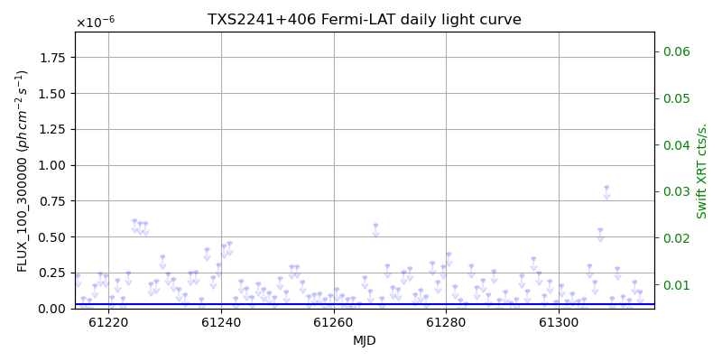
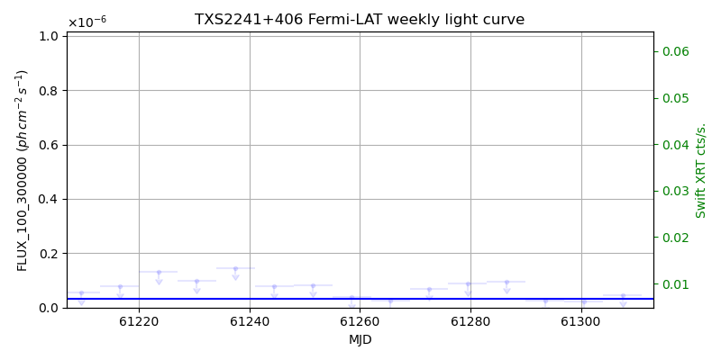
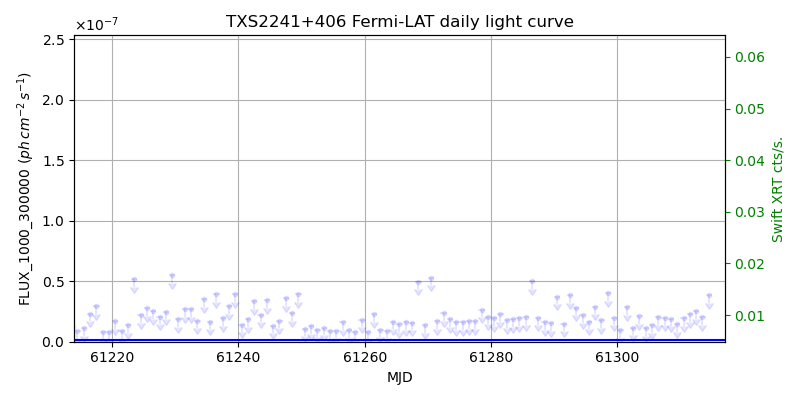
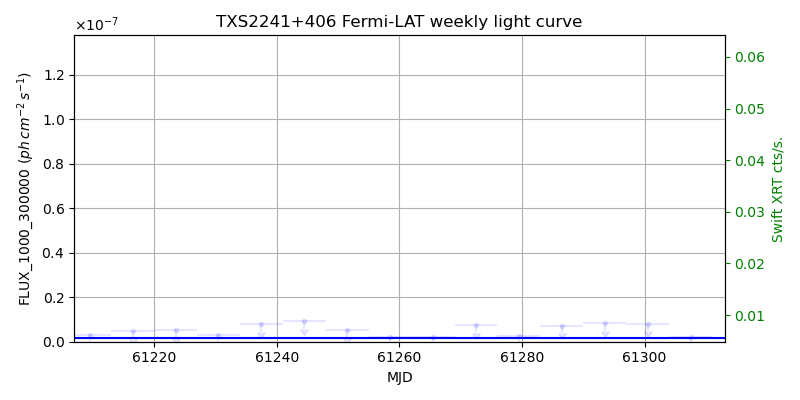

LAT Lightcurve site: https://fermi.gsfc.nasa.gov/ssc/data/access/lat/msl_lc/source/TXS_2241p406
Swift site: https://www.swift.psu.edu/monitoring/source.php?source=TXS2241+406
NED: Query
Time of last update of this page: UT: 2026-10-02 15:30 (MJD: 61315.646)
| Property | Value |
|---|---|
| R.A. | 22:44:12.72 |
| Dec. | 40:57:14.4 |
| z | 1.171 |
| 3FGL SpectrumType | PowerLaw |
| 3FGL PL Index | 2.29 |
| 3FGL Flux_100_300000 | 3.22e-08 1 / (s cm2) |
| 3FGL Flux_1000_300000 | 1.65e-09 1 / (s cm2) |
| 3FGL Flux >200 GeV | 1.78e-12 1 / (s cm2) |
| 3FGL Extrap. Crab >200 GeV | 0.01 |
| 3FGL Flux After EBL Absorption >200GeV | 1.20e-14 1 / (s cm2) |
| 3FGL EBL Crab Fraction >200GeV | 0.00 |

| MJD | dMJD | Flux | dFlux | Frac3FGL | FracCrab>200GeV | EBLFracCrab>200GeV |
|---|---|---|---|---|---|---|
| 61310.50 | 0.50 | 2.84e-07 | 0.00e+00 | 0.00 | 0.00 | 0.00 |
| 61311.50 | 0.50 | 8.76e-08 | 0.00e+00 | 0.00 | 0.00 | 0.00 |
| 61312.50 | 0.50 | 6.41e-08 | 0.00e+00 | 0.00 | 0.00 | 0.00 |
| 61313.50 | 0.50 | 1.86e-07 | 0.00e+00 | 0.00 | 0.00 | 0.00 |
| 61314.50 | 0.50 | 1.17e-07 | 0.00e+00 | 0.00 | 0.00 | 0.00 |

| MJD | dMJD | Flux | dFlux | Frac3FGL | FracCrab>200GeV | EBLFracCrab>200GeV |
|---|---|---|---|---|---|---|
| 61279.50 | 3.50 | 8.75e-08 | 0.00e+00 | 0.00 | 0.00 | 0.00 |
| 61286.50 | 3.50 | 9.65e-08 | 0.00e+00 | 0.00 | 0.00 | 0.00 |
| 61293.50 | 3.50 | 2.72e-08 | 0.00e+00 | 0.00 | 0.00 | 0.00 |
| 61300.50 | 3.50 | 2.21e-08 | 0.00e+00 | 0.00 | 0.00 | 0.00 |
| 61307.50 | 3.50 | 4.61e-08 | 0.00e+00 | 0.00 | 0.00 | 0.00 |

| MJD | dMJD | Flux | dFlux | Frac3FGL | FracCrab>200GeV | EBLFracCrab>200GeV |
|---|---|---|---|---|---|---|
| 61310.50 | 0.50 | 1.96e-08 | 0.00e+00 | 0.00 | 0.00 | 0.00 |
| 61311.50 | 0.50 | 2.28e-08 | 0.00e+00 | 0.00 | 0.00 | 0.00 |
| 61312.50 | 0.50 | 2.54e-08 | 0.00e+00 | 0.00 | 0.00 | 0.00 |
| 61313.50 | 0.50 | 2.04e-08 | 0.00e+00 | 0.00 | 0.00 | 0.00 |
| 61314.50 | 0.50 | 3.86e-08 | 0.00e+00 | 0.00 | 0.00 | 0.00 |

| MJD | dMJD | Flux | dFlux | Frac3FGL | FracCrab>200GeV | EBLFracCrab>200GeV |
|---|---|---|---|---|---|---|
| 61279.50 | 3.50 | 2.73e-09 | 0.00e+00 | 0.00 | 0.00 | 0.00 |
| 61286.50 | 3.50 | 7.15e-09 | 0.00e+00 | 0.00 | 0.00 | 0.00 |
| 61293.50 | 3.50 | 8.40e-09 | 0.00e+00 | 0.00 | 0.00 | 0.00 |
| 61300.50 | 3.50 | 8.06e-09 | 0.00e+00 | 0.00 | 0.00 | 0.00 |
| 61307.50 | 3.50 | 2.31e-09 | 0.00e+00 | 0.00 | 0.00 | 0.00 |
--------------------------------------------------------- Using user-supplied coords: 22:44:12.72 40:57:14.4 2000 --------------------------------------------------------- FLWO UT night of: 2026-10-03 Local Sid. @ Midnight: 00:24 Sunset (-15.0) (local, UT): 19:14 02:14 Sunrise (-15.0) (local, UT): 05:12 12:12 Moonrise (local, UT): 22:48 05:48 Moonset (local, UT): Moon phase: 0.53 --------------------------------------------------------- AzTime LSID UT Obj_el Obj_az Mn_el Mn_az Sep. --------------------------------------------------------- 19:14 19:37 02:14 51.5 62.3 -28.5 20.1 88.2 19:44 20:07 02:44 57.1 62.1 -26.2 26.7 88.4 20:14 20:37 03:14 62.8 60.7 -23.2 32.8 88.7 20:44 21:07 03:44 68.3 57.5 -19.6 38.5 89.0 21:14 21:37 04:14 73.5 50.5 -15.7 43.6 89.2 21:44 22:07 04:44 77.9 36.2 -11.3 48.4 89.5 22:14 22:37 05:14 80.5 8.8 -6.5 52.7 89.7 22:44 23:07 05:44 79.6 336.1 -0.8 56.7 89.9 23:14 23:37 06:14 75.9 315.5 3.8 60.4 90.1 23:44 00:07 06:44 71.0 305.5 9.1 63.9 90.3 00:14 00:38 07:14 65.6 300.6 14.6 67.1 90.5 00:44 01:08 07:44 60.0 298.4 20.3 70.2 90.7 01:14 01:38 08:14 54.4 297.7 26.1 73.1 90.9 01:44 02:08 08:44 48.7 297.9 32.1 76.0 91.0 02:14 02:38 09:14 43.1 298.7 38.1 78.8 91.2 02:44 03:08 09:44 37.5 300.0 44.2 81.7 91.3 03:14 03:38 10:14 32.0 301.7 50.3 84.8 91.5 03:44 04:08 10:44 26.6 303.7 56.5 88.1 91.6 04:14 04:38 11:14 21.4 306.0 62.7 91.9 91.8 04:44 05:08 11:44 16.3 308.7 68.9 96.9 91.9 05:12 05:37 12:12 11.7 311.4 74.7 103.8 92.0 --------------------------------------------------------- Dark hours >55 deg.: 3.26 srcstart (UT): 2026-10-03 02:32 srcend (UT): 2026-10-03 05:48